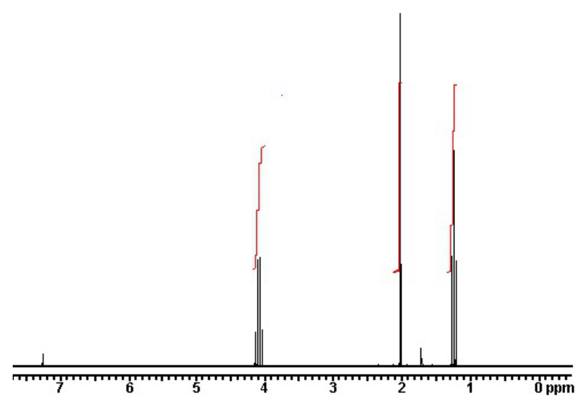

開卷有益 ／
藥師 ／ 藥物分析與生藥學 ／ 111 年第 1 次111 年第 1 次藥師藥物分析與生藥學試題與答案
這一頁是民國 111 年第 1 次藥師藥物分析與生藥學的整份歷屆試題，共 80 題，題目與標準答案出自考選部「國家考試試題及測驗式試題答案」開放資料，其中 72 題附有詳解。以下逐題列出題幹、選項與答案；要計時作答或記錄成績，請用線上練習。
考選部原始場次代碼：111020
線上作答這一科 →
全部 80 題
第 1 題
在無水乙酸中，下列四種酸所呈現的酸性強度由大至小的順序，何者正確？①HCl ②HBr ③HNO3 ④HClO4
（A） ①③②④（B） ④②①③（C） ④③①②（D） ①②③④答案：（B）
詳解與考點 正解：在無水乙酸這類可區別酸強度的非水溶媒中，強酸不會像在水中被完全拉平；依其在該溶媒中的相對給質子能力，順序是 HClO4 > HBr > HCl > HNO3，即④②①③，故選 B。
A：（A）把 HCl 置於首位且把 HClO4 置於末位，與非水溶媒中 HClO4 最強的排序相反。
C：（C）雖先列 HClO4，但將 HNO3 排在 HCl 與 HBr 前；這兩者的相對酸性順序不符。
D：（D）把 HCl 排在 HBr 前，並將 HClO4 列為最弱，兩處都違反此溶媒中的相對酸強度。
本題考點：溶媒效應（solvent effect）——比較強酸時先判斷溶媒會造成拉平效應還是區別效應；非水酸鹼滴定（nonaqueous acid-base titration）——在無水乙酸中排序須用該溶媒內的相對酸性，不能直接沿用水溶液的印象。
第 2 題
容量分析器皿依其用途可分為轉移（deliver）或裝載（contain）定量液體之容器，下列何項容器非屬轉移用器 皿？
（A） 滴定管（burette）（B） 球型吸管（bulb pipette）（C） 容量瓶（volumetric flask）（D） 刻度吸管（graduated pipette）答案：（C）
第 3 題
以酸鹼滴定分析順丁烯二酸（pKa 1.85, 6.05）和反丁烯二酸（pKa 3.03, 4.44），其滴定曲線依序各有多少個明 顯彎曲？
（A） 1；1（B） 1；2（C） 2；1（D） 2；2答案：（C）
詳解與考點 正解：判準是兩個 pKa 的差距是否足以讓兩個當量點分開。順丁烯二酸的 ΔpKa = 6.05 - 1.85 = 4.20，兩段解離可分辨，出現 2 個明顯彎曲；反丁烯二酸的 ΔpKa = 4.44 - 3.03 = 1.41，兩段重疊，只見 1 個明顯彎曲，故選 C。
A：（A）把順丁烯二酸判為只有 1 個彎曲，忽略了其兩個 pKa 相差 4.20，足以分開觀察。
B：（B）將兩酸的可分辨性完全對調；pKa 間距較大的順丁烯二酸才有 2 個明顯彎曲。
D：（D）前半的順丁烯二酸正確，但反丁烯二酸的 pKa 間距只有 1.41，兩個彎曲不會清楚分開。
本題考點：多元酸滴定曲線（polyprotic acid titration curve）——各解離步驟的 pKa 間距夠大時，才可在曲線上分辨多個彎曲或當量區；pKa 間距（ΔpKa）——比較同一分子的相鄰 pKa，間距小時兩段中和反應會重疊。
第 4 題
關於非水鹼滴定法的敘述，下列何項錯誤？
（A） 無法以電位滴定法進行終點檢測（B） 典型的滴定劑之一是lithium methoxide的甲醇溶液（C） 滴定劑之配製可使用無質子溶劑（aprotic solvent）（D） 瑞香草藍（thymol blue）可作為滴定終點的指示劑答案：（A）
詳解與考點 正解：非水鹼滴定的終點除了可用指示劑判讀，也可利用滴定劑過量後電極電位出現轉折來偵測；因此（A）稱無法以電位滴定法進行終點檢測是不正確敘述，故選 A。
B：（B）lithium methoxide 的甲醇溶液可作為非水鹼滴定的典型滴定劑之一，適合提供鹼性滴定反應。
C：（C）滴定劑可依分析物與反應需要配製於無質子溶劑（aprotic solvent）；關鍵是溶媒須維持合適的酸鹼反應與溶解性。
D：（D）瑞香草藍（thymol blue）可作為此類滴定的終點指示劑，並非錯誤敘述。
本題考點：非水鹼滴定（nonaqueous alkalimetry）——水中酸鹼性不易區分時，改選能拉開反應差異的非水溶媒；電位終點偵測（potentiometric endpoint detection）——指示劑變色不清楚時，依電極電位的明顯轉折判定終點。
第 5 題
費氏（Karl Fischer）水分測定法在反應終了時，係因下列何者生成過量而使電位急遽下降？
（A） 二氧化硫（B） 甲醇（C） 吡啶（D） 碘答案：（D）
詳解與考點 正解：費氏（Karl Fischer）水分測定中，碘會在有水存在時被定量消耗；水全數反應後，後續滴入的碘無法再被消耗而產生過量，依題幹所述造成電位急遽下降，因此（D）碘是終點訊號，故選 D。
A：二氧化硫是 Karl Fischer 反應系統中的反應物，終點不是以（A）二氧化硫的過量來判定。
B：甲醇作為反應介質並參與反應環境的建立，不會在水剛耗盡時以（B）甲醇過量產生特異電位終點。
C：吡啶在傳統 Karl Fischer 試劑中提供鹼性環境；它不是水耗盡後作為（C）過量終點指標的成分。
本題考點：Karl Fischer 水分測定（Karl Fischer titration）——水存在時滴定劑中的碘被消耗，第一個持續存在的過量碘即代表終點；電位滴定終點（potentiometric endpoint）——以氧化還原活性物質過量造成的電位突變來判讀，不以溶媒或輔助試劑判讀。
第 6 題
關於比重之敘述，下列何者錯誤？
（A） 不受溫度影響（B） 氣體、固體亦可測定（C） 在25℃下，乙醇之比重小於水（D） pycnometer可用於比重測定答案：（A）
詳解與考點 正解：比重是樣品密度與參考物質密度的比值，而密度會因溫度改變體積而改變；比較比重時必須控制或註明溫度，所以（A）稱不受溫度影響為錯誤，故選 A。
B：（B）氣體、固體與液體都可依其密度相對於參考物質的關係測定比重，並非只有液體可測。
C：在 25℃ 下，乙醇的密度小於水，故（C）乙醇比重小於水的敘述正確。
D：比重瓶（pycnometer）以固定容積與稱重求得密度，可用於（D）比重測定。
本題考點：比重（specific gravity）——判斷比重資料時，樣品與參考物必須在同一溫度下比較；比重瓶法（pycnometry）——固定體積配合質量測量可求密度，再換算比重。
第 7 題
鉛檢查法可利用與下列何種試劑之呈色反應來檢查？
（A） 四乙酸乙二胺（EDTA）（B） 二苯硫腙（diphenylcarbazone）（C） 二乙胺基二硫甲酸銀（silver diethyldithiocarbamate）（D） 氰化鉀（KCN）答案：（B）
第 8 題
在硼酸鹽的鑑定中，取硼酸鹽溶液加鹽酸使成酸性，能使下列何種試紙變成棕色，若放置乾燥後，顏色即變 深，若用氨試液濕潤，則變成墨綠色？
（A） 廣用試紙（B） 薑黃試紙（C） 殘氯試紙（D） 氯化亞鈷試紙答案：（B）
詳解與考點 正解：硼酸鹽酸化後形成硼酸，會與薑黃試紙中的 curcumin 產生棕色至深色的反應產物；再以氨試液濕潤轉成墨綠色，是硼酸鹽的鑑別特徵，故選 B。
A：廣用試紙只反映酸鹼度，酸化步驟雖會改變其顏色，卻無法呈現（A）硼酸鹽專一的棕色與墨綠色變化。
C：殘氯試紙用於偵測具氧化性的餘氯，與硼酸鹽酸化後的（C）鑑定反應無關。
D：氯化亞鈷試紙主要用於水分或濕度的指示，不會出現（D）題述的硼酸鹽特徵變色。
本題考點：硼酸鹽鑑定（borate identification）——先以酸化使硼酸鹽進入可與薑黃反應的型態，再看氨處理後的特徵變色；選擇性呈色反應（selective color reaction）——試紙題要同時比對前處理與後續顏色轉變，不能只看單一步驟的顏色。
第 9 題
關於丁香油（clove oil）的含量測定敘述，下列何者錯誤？
（A） 係分析主成分丁香酚（eugenol）（B） 用貝氏瓶（Babcock bottle）測定（C） 檢品與氫氧化鉀振搖後，體積會減少（D） 需加熱使乙酸丁香酯（eugenyl acetate）皂化答案：（B）
詳解與考點 正解：丁香油含量測定以丁香酚（eugenol）的酚性基與 KOH 反應為核心；振搖後丁香酚轉入鹼性層，油相體積減少，而乙酸丁香酯（eugenyl acetate）需先加熱皂化後納入測定。因此錯的是（B）用貝氏瓶（Babcock bottle）測定，故選 B。
A：丁香酚是丁香油的主要成分，故（A）以丁香酚作為分析主成分符合此含量測定的標的。
C：丁香酚被 KOH 轉成可溶於鹼性層的鹽類，非酚性油相所占體積因此減少；（C）正是方法利用的相分配變化。
D：乙酸丁香酯是酯類，須加熱皂化釋出可反應的丁香酚，故（D）為正確的前處理敘述。
本題考點：丁香油含量測定（clove oil assay）——先辨識丁香酚的酚性基可被鹼萃取，油相體積的改變才有定量意義；皂化（saponification）——成分以酯型存在時，先水解成可測的游離型態再納入總量判讀。
第 10 題
以滴定法進行顛茄鹼（atropine）的含量測定時，應於待測溶液中加入下列何者？
（A） Mayer試劑（B） Wagner試劑（C） methyl red（D） phenolphthalein答案：（C）
詳解與考點 正解：顛茄鹼（atropine）的含量以酸鹼滴定處理時，需要可辨認該終點範圍的（C）methyl red；它在本題是終點指示劑，故選 C。
A：Mayer 試劑會與生物鹼形成沉澱，主要用於生物鹼的定性檢查，不是（A）滴定終點指示劑。
B：Wagner 試劑同樣用於生物鹼的沉澱或定性反應；有沉澱反應不等於能作為（B）酸鹼滴定終點指示劑。
D：phenolphthalein 的變色範圍偏鹼性，與本題顛茄鹼滴定所需的（D）終點指示條件不相符。
本題考點：生物鹼含量滴定（alkaloid assay by titration）——先分清楚試劑是用於沉澱鑑別還是用於酸鹼終點；酸鹼指示劑（acid-base indicator）——依滴定曲線的終點 pH 選變色範圍相符的指示劑，不能以能與生物鹼反應作判準。
第 11 題
取一顆標稱含量為20.0 mg之warfarin sodium錠劑，配成之檢品溶液稀釋10倍至最終體積100 mL，在307 nm測 量溶液之吸收值為0.760，溶液之吸光係數（A：1%, 1 cm）為400。錠劑實際含量與標稱含量的比值為何？
（A） 1.05（B） 1.01（C） 0.98（D） 0.95答案：（D）
詳解與考點 正解：吸光係數 A（1%, 1 cm）為 400，光徑為 1 cm，先由 A = E·c·l 求最終溶液濃度：c = 0.760/(400 × 1) = 0.00190 g/100 mL = 1.90 mg/100 mL。最終體積為 100 mL，故該稀釋液含 warfarin sodium 1.90 mg。這是原檢品溶液的 10 倍稀釋，回推一錠實際含量 = 1.90 mg × 10 = 19.0 mg。比值 = 19.0 mg/20.0 mg = 0.950，故選 D。
A：（A）1.05 代表實際含量為 20.0 mg × 1.05 = 21.0 mg，與吸光值回推的 19.0 mg 方向相反。
B：（B）1.01 代表 20.2 mg，沒有依 10 倍稀釋回推，也不符合由吸收值求得的濃度。
C：（C）0.98 對應 19.6 mg；此值與 19.0 mg 的差異不是四捨五入造成，而是濃度或稀釋倍數處理錯誤。
本題考點：紫外可見吸收定量（UV-Vis spectrophotometry）——以 A = E·c·l 求濃度時，要先確認吸光係數所用的濃度單位與光徑；稀釋倍數回推（dilution factor back-calculation）——量到的是最終稀釋液時，總含量須乘回每一個稀釋倍數後才可和標稱量比較。
第 12 題
關於利用紅外光光譜測定樣品的敘述，下列何者錯誤？
（A） 一般固態檢品常以氟化鉀做為介質（B） 一般固態檢品經壓製成片後進行測定（C） 一般可用聚苯乙烯薄膜進行波數校正（D） 固態檢品須與對照標準品具相同晶形答案：（A）
詳解與考點 正解：一般固態檢品的中紅外光譜常以 KBr 製成透明壓片後測定；（A）將常用介質寫成氟化鉀，不符合此製樣法，故選 A。
B：固態檢品與 KBr 混合後壓製成片再測定，是（B）常見的紅外光譜製樣方式。
C：聚苯乙烯薄膜具有已知且穩定的吸收峰，可用於（C）波數校正。
D：固態樣品的晶形會影響紅外吸收特徵；以對照標準品比對鑑別時，應使（D）晶形相同。
本題考點：KBr 壓片法（KBr pellet method）——固態樣品做中紅外量測時，優先辨識 KBr 壓片這一標準製樣法；紅外鑑別（infrared identification）——和標準品比對時，控制晶形等固態型態，避免物理型態差異被誤判為化學差異。
第 13 題
下圖為何者之氫核磁共振圖譜？

（A） 乙醇（B） 乙酸乙酯（C） 丁酮（D） 丙烯答案：（B）
第 14 題
下列有關圖示化合物之核磁共振譜（CD3OD）資訊，何者錯誤？（B含B1和B2）
（A） 質子B1與B2的偶合常數為12 Hz（B） 質子B1與C的偶合常數為4 Hz（C） 質子B2與C的偶合常數為10 Hz（D） 質子B1、B2與C的偶合屬於AMX系統答案：（D）
第 15 題
苯環鄰位氫的偶合常數約為多少Hz？
（A） 8（B） 12（C） 16（D） 4答案：（A）
詳解與考點 正解：苯環上相鄰兩個氫隔三個鍵產生 ortho coupling，其偶合常數通常約為 8 Hz；這是芳香環質子譜判別取代位置的常用範圍，故選 A。
B：（B）12 Hz 較常見於某些非等價 methylene 質子的同碳耦合，不是苯環鄰位氫的典型值。
C：（C）16 Hz 對芳香環鄰位質子而言過大，不能作為一般 ortho coupling 的判準。
D：（D）4 Hz 低於典型鄰位耦合，較接近較小的遠距耦合範圍，不能據此判為 ortho coupling。
本題考點：芳香環質子耦合（aromatic proton coupling）——看到苯環相鄰氫時，先以約 8 Hz 的 ortho coupling 作判別；耦合常數（J coupling constant）——用 J 值區分鄰位與較遠距質子時，要比較典型範圍，不以訊號峰高判斷。
第 16 題
在氫核磁共振譜中，一般無法獲得下列何種資訊？
（A） 鹵素原子種類及數量（B） 分子中各種氫的大致數量及比例（C） 分子中各種氫的化學位移（D） 鄰近氫之間的偶合常數答案：（A）
詳解與考點 正解：氫核磁共振譜直接觀察的是氫核訊號，可由積分、化學位移與分裂型態取得氫的相關資訊；鹵素原子的種類及數量不會被 1H NMR 直接辨識，故選 A。
B：訊號積分面積與各類氫的相對數量成比例，所以（B）可由 1H NMR 大致取得。
C：每組氫的訊號位置就是其化學位移，故（C）是 1H NMR 的基本資訊。
D：訊號分裂間距可讀出鄰近氫的耦合常數，因此（D）亦可由譜圖取得。
本題考點：氫核磁共振（1H NMR）——判斷可取得的資訊時，依序看化學位移、積分與分裂型態；訊號歸屬限制（spectral assignment limitation）——非氫原子的種類與數量不能僅靠 1H NMR 直接定性，須搭配其他分析資訊。
第 17 題
下列何者較不適合利用基質輔助雷射脫附游離法（matrix-assisted laser desorption ionization, MALDI）進行分 析？
（A） warfarin血中濃度（B） 蛋白質結構（C） DNA序列（D） 製劑中聚合物答案：（A）
詳解與考點 正解：基質輔助雷射脫附游離法（MALDI）主要適合大分子、不易揮發或易裂解物的溫和離子化；warfarin 是小分子，血中濃度定量又容易受低質量區基質干擾與離子化重現性限制，通常更適合 LC-MS/MS，故選 A。
B：蛋白質是高分子且常需避免過度裂解，（B）可利用 MALDI 取得分子量或進行相關結構分析。
C：DNA 為高分子核酸，MALDI 可用於（C）序列或片段的質譜分析，符合其適用範圍。
D：製劑中的聚合物通常具有較高分子量與分布特性，（D）適合以 MALDI 協助分析。
本題考點：MALDI 質譜（matrix-assisted laser desorption ionization）——樣品若為大分子、聚合物或生物巨分子，優先考慮溫和離子化的 MALDI；小分子生物分析（small-molecule bioanalysis）——血中低濃度小分子定量要留意基質干擾與再現性，常以 LC-MS/MS 作為較合適的選擇。
第 18 題
關於比旋光度值計算式：[α]D = 100α／lc之敘述，下列何者錯誤？
（A） 貯液槽之長度為10 cm（B） 使用光源之波長為589 nm（C） 檢品濃度c 之單位為g/mL（D） 水可作為溶媒答案：（C）
詳解與考點 正解：比旋光度公式 [α]D = 100α/(l·c) 中的 100 已將濃度表示方式納入，因此 c 應以 g/100 mL 表示，而不是（C）g/mL；若以 g/mL 代入仍保留 100，數值會差 100 倍，故選 C。
A：公式中的 l 以 dm 表示，10 cm = 1 dm，故（A）貯液槽長度為 10 cm 可直接對應此光徑單位。
B：上標 D 指鈉 D 線，常用波長為 589 nm，故（B）正確。
D：水可作為不與檢品反應且能使其溶解的溶媒之一，因此（D）並非公式使用上的錯誤。
本題考點：比旋光度（specific rotation）——代入 [α]D = 100α/(l·c) 前，先確認 l 用 dm、c 用 g/100 mL；鈉 D 線（sodium D line）——符號 D 指定量測光源波長，判讀比旋光度時不能把它誤當成濃度或溶媒代號。
第 19 題
若欲得到promethazine製劑中不純物的分子式，利用下列何者最合適？
（A） 氣相層析－四極柱質譜儀（gas chromatography-quadrupole mass spectrometry）（B） 液相層析－四極柱質譜儀（liquid chromatography-quadrupole mass spectrometry）（C） 液相層析－離子阱質譜儀（liquid chromatography-ion trap mass spectrometry）（D） 液相層析－傅立葉轉換質譜儀（liquid chromatography-fourier transform mass spectrometry）答案：（D）
詳解與考點 正解：要由 promethazine 製劑中不純物取得分子式，關鍵是量到足夠精確的精確質量與同位素分布；液相層析－傅立葉轉換質譜儀（LC-FTMS）兼具液相分離與高解析、準確質量測定，最適合推定元素組成，故選 D。
A：氣相層析－四極柱質譜儀適合揮發性、耐熱分析物；（A）不僅分離條件未必適合製劑不純物，四極柱的質量準確度也不足以優先求分子式。
B：液相層析－四極柱質譜儀可分離（B）不純物，但一般四極柱質譜提供的解析度與準確質量不足以可靠區分相近元素組成。
C：液相層析－離子阱質譜儀擅長多級碎裂以輔助結構解析；（C）若目標是分子式，仍不如 FTMS 的高解析精確質量直接。
本題考點：高解析質譜（high-resolution mass spectrometry）——目標是推定分子式時，優先選有準確質量與高解析度的儀器；LC-FTMS——樣品不易揮發或為複雜製劑不純物時，先以 LC 分離再用 FTMS 比對精確 m/z 與同位素分布。
第 20 題
Methoxamine HCl 在 290 nm 之 A (1%，1 cm) 值為150。取 1 mL 的此藥品注射液以水稀釋 500 倍，在 290 nm 以紫外光譜儀測定，其吸收值為 0.45。該注射液中 methoxamine HCl 的含量為多少w/v？
（A） 1.50%（B） 0.15%（C） 0.30%（D） 3.00%答案：（A）
詳解與考點 正解：比吸光係數 A（1%，1 cm）表示 1% w/v 溶液在光徑 1 cm 時的吸光值為 150，故可用 Beer–Lambert law 求稀釋液濃度。令稀釋液濃度為 c，0.45 = 150 × c × 1，得 c = 0.003% w/v。原注射液為稀釋前濃度，0.003% × 500 = 1.50% w/v，故選 A。
B：0.15% w/v 少算了一個十倍因子。由 0.45 除以 150 得到的是 0.003% w/v，還必須乘回 500 倍稀釋因子。
C：0.30% w/v 與吸光值及 500 倍稀釋條件不符；若原液為此濃度，稀釋後的預期吸光值會是 0.09，而非 0.45。
D：3.00% w/v 為正確濃度的兩倍，等同把比吸光係數或稀釋關係錯置，無法由題示數值推得。
本題考點：比吸光係數（specific absorbance）——遇到 A（1%，1 cm）時，先以吸光值除以比吸光係數求測定液的百分濃度；Beer–Lambert law——固定光徑下吸光值與濃度成正比，稀釋後要乘回稀釋倍數才是原液濃度。
第 21 題
於 292 nm波長下測定相同濃度的 phenylephrine，在0.1 M NaOH及0.1 M HCl中所測得之吸光值分別為1.11及 0.01。在pH 7.9時所測得的吸光值為0.11，則此藥物的pKa值為多少？
（A） 6.9（B） 7.9（C） 8.9（D） 9.9答案：（C）
詳解與考點 正解：pH 7.9 的吸光值介於酸性與鹼性極限值之間，可先由吸光值求高吸收型的分率。0.11 = 0.01 + f × 1.10，故 f = 0.10 / 1.10 = 0.0909；高吸收型與低吸收型的比值為 0.0909 / 0.9091 = 0.10。代入 Henderson–Hasselbalch equation，7.9 = pKa + log 0.10 = pKa − 1.0，得 pKa = 8.9，故選 C。
A：6.9 是把對數項的方向反過來所得。若 pKa 為 6.9，pH 7.9 時高吸收型與低吸收型比值應為 10，吸光值會接近 1.01，而非 0.11。
B：7.9 只是本次量測的 pH，不是 pKa。pH = pKa 時兩型分率各半，預期吸光值應為 0.56，即兩個極限吸光值的中點。
D：9.9 會使 pH 7.9 時的型態比值降為 0.01，預期吸光值約為 0.021，仍與題示 0.11 不合。
本題考點：吸收光譜法測 pKa（spectrophotometric pKa determination）——兩型吸收不同時，先把觀測吸光值換成各型分率再求比值；Henderson–Hasselbalch equation——用 pH = pKa + log［鹼型／酸型］時，先確認吸收較強者對應哪一型，避免對數方向顛倒。
第 22 題
關於螢光度分析法影響因子之敘述，下列何者正確？
（A） 樣品中含有重金屬，可增加放射光的強度（B） 樣品可使用低於UV測試之濃度（C） 可直接使用本法分析樟腦（camphor）（D） 提高溫度會增加螢光強度答案：（B）
詳解與考點 正解：螢光度分析的靈敏度通常高於紫外吸收分析，因此可在更低濃度下測定具螢光特性的樣品。低濃度可減少內濾效應與濃度猝熄，使螢光訊號維持在線性可測範圍，故選 B。
A：重金屬常造成螢光猝熄（quenching），藉由促進非輻射失活而降低放射光強度，不會使其增加。
C：camphor 缺乏通常可直接產生強螢光的剛性共軛發色團，不能不經衍生化或其他處理便以螢光法作直接分析。
D：提高溫度會增加分子碰撞與非輻射失活機會，螢光強度通常下降。
本題考點：螢光分析靈敏度（fluorimetry sensitivity）——當分析物具適當發色團時，選低濃度區間以避免內濾效應與濃度猝熄；螢光猝熄（fluorescence quenching）——碰撞、重金屬或升溫使非輻射途徑增加時，優先判斷螢光會減弱而非增強。
第 23 題
關於原子放射光譜分析的敘述，下列何者正確？
（A） 用於檢測製劑中特定鹼金族元素，如鈉、鉀與鋰（B） 原理是偵測原子吸收所提供之能量（C） 主要用於定性分析（D） 不適用於檢測製劑中鈣與鋇之含量答案：（A）
詳解與考點 正解：原子放射光譜以受激原子回到較低能階所放出的特徵光作定量訊號，對鈉、鉀、鋰等鹼金族元素的檢測特別常用。因此（A）用於製劑中特定鹼金族元素的測定符合其應用，故選 A。
B：偵測原子吸收外加光源能量的是原子吸收光譜（atomic absorption spectroscopy）的概念；原子放射光譜讀取的是原子自身放射的光。
C：放射強度可用標準品建立濃度校正關係，原子放射光譜不僅能作定性辨識，也可作定量分析。
D：鈣與鋇等鹼土金族元素也可產生特徵放射訊號，並非原子放射光譜一概不適用的元素。
本題考點：原子放射光譜（atomic emission spectroscopy）——判斷訊號來源時，看受激原子放出特徵光，不是吸收外來光；元素定量分析——特徵波長用於辨識元素，放射強度對照校正曲線時用於求含量。
第 24 題
有關紫外光／可見光光譜法之敘述，下列何者錯誤？
（A） 檢品容槽應以固定面向置入儀器（B） 檢品溶於有機溶媒進行測定時，應防止溶媒揮發（C） 檢品溶液內含懸浮顆粒時將導致吸光值減少（D） 檢品溶液使用之溶媒，在測定波段應儘量不具吸光性答案：（C）
詳解與考點 正解：本題問錯誤敘述，關鍵在懸浮顆粒會造成光散射，使到達檢測器的透射光減少。依吸光度 A = -log T，透射率 T 降低時表觀吸光值會增加；因此（C）說吸光值減少的方向相反，故選 C。
A：檢品容槽固定面向置入可維持光徑、容槽表面狀態與散射背景的一致性，是正確操作，故非答案。
B：有機溶媒揮發會改變溶液濃度，亦可能造成氣泡與基線不穩，測定時防止揮發是正確敘述，故非答案。
D：溶媒在測定波段應盡量不吸收，才能避免溶媒背景遮蔽檢品訊號，是正確敘述，故非答案。
本題考點：紫外可見光散射干擾（light scattering）——溶液混濁時先判斷透射光減少、表觀吸光值升高；透射率與吸光度（transmittance and absorbance）——A = -log T，凡使 T 降低的因素都會使 A 往上偏；紫外可見光操作（UV–visible spectrophotometry）——容槽方向與溶媒空白必須一致，才能避免非分析物造成的訊號差。
第 25 題
有關質譜法中各種離子分離器（analyzer）之原理描述，下列何者錯誤？
（A） 磁場式（magnetic sector）：利用靜電場裝置將離子動能侷限在較小範圍（B） 四極柱（quadrupole）：利用控制直流電場及無線電波頻率電場以選擇特定質荷比離子（C） 飛行時間（time of flight）：利用離子通過相同飛行區域所需時間作為質荷比之計算依據（D） 離子阱（ion trap）：利用直流電場將離子留置在阱內答案：（D）
詳解與考點 正解：離子阱（ion trap）必須以射頻電場形成可穩定留置離子的動態阱；單靠直流電場不能穩定困住帶電離子。因此（D）把離子留置機制說成利用直流電場，遺漏關鍵的射頻場，故選 D。
A：磁場式（magnetic sector）系統可配合靜電扇形場處理離子動能分布，令不同動能離子得到較佳聚焦，敘述方向符合扇形場分析器的用途。
B：四極柱（quadrupole）以直流電壓與射頻電壓共同形成穩定區，只有特定質荷比的離子可通過，是正確敘述。
C：飛行時間（time of flight）分析器使離子通過固定飛行距離，依到達檢測器的時間換算質荷比，是正確敘述。
本題考點：離子阱（ion trap）——判斷離子留置原理時，核心是射頻電場形成的動態穩定軌跡，不是單一直流電場；四極柱（quadrupole）——直流場與射頻場共同篩選可穩定通過的質荷比；飛行時間質譜（time-of-flight mass spectrometry）——在相同飛行距離下，以飛行時間反推質荷比。
第 26 題
有關紅外光光譜法中官能基團吸收波數之敘述，下列何者正確？
（A） C－H：1500～1700 cm-1（B） O－H：3200～3600 cm-1（C） C = O：1050～1300 cm-1（D） C = C：2100～2260 cm-1答案：（B）
第 27 題
使用GC分析bupivacaine製劑中的不純物dimethylaniline時，下列敘述何者錯誤?
（A） 使用cyclohexane萃取樣品時，可先將樣品酸化以增加回收率（B） dimethylaniline相較於bupivacaine有較短的滯留時間（C） 可使用溫度梯度增加解析度與效率（D） 可使用內標準品法定量答案：（A）
詳解與考點 正解：以 cyclohexane 萃取 dimethylaniline 時，分析物需維持未離子化的游離鹼，才能分配到非極性的有機層。酸化會使 dimethylaniline 質子化而偏留水層，降低回收率；因此（A）所述處理方向錯誤，故選 A。
B：dimethylaniline 分子較小、揮發性相對較高，通常比 bupivacaine 有較短滯留時間，這是合理的 GC 分離趨勢，故非答案。
C：溫度梯度可讓不同揮發性成分依序洗脫，兼顧峰形、解析度與分析時間，是 GC 常用的操作，故非答案。
D：內標準品法可校正注射體積與前處理損失造成的變異，適合作為此類定量方法，故非答案。
本題考點：酸鹼萃取（acid–base extraction）——要把鹼性分析物萃入非極性有機層時，先使其維持游離鹼而非鹽類；氣相層析滯留（GC retention）——在相近固定相下，較不易揮發或與固定相作用較強的成分通常滯留較久；內標準品法（internal standard method）——前處理與進樣可能有變異時，用內標校正相對訊號。
第 28 題
關於GC-MS定量方法確效的敘述，下列何者錯誤？
（A） 利用重複注射檢體，評估分析方法的重複性（B） 將樣品在不同天進行定量，比較定量結果的差異，以評估分析方法的再現性（C） 利用添加標準品評估分析方法的準確度（D） 添加內標準品可提升此定量方法的準確度與精密度答案：（B）
詳解與考點 正解：同一實驗室在不同天測定樣品，評估的是中間精密度（intermediate precision），不是再現性（reproducibility）。再現性必須納入不同實驗室、儀器或更廣泛條件造成的變異；因此（B）將不同日結果直接稱為再現性不正確，故選 B。
A：重複注射同一檢體可觀察短時間、相同條件下的訊號變異，適合評估重複性（repeatability），故非答案。
C：在樣品中添加已知量標準品並檢查回收結果，可評估方法測得真實值的接近程度，即準確度（accuracy），故非答案。
D：內標準品可補償萃取、進樣與儀器響應的部分變異，通常有助於提升定量的準確度與精密度，故非答案。
本題考點：分析方法精密度（precision）——同條件短時間重複量測看 repeatability，不同日或條件變動看 intermediate precision；再現性（reproducibility）——要評估跨實驗室或更廣泛操作條件的變異，不能只以不同日測定替代；準確度（accuracy）——添加回收或標準添加時，看測得值與已知加入量是否相符。
第 29 題
關於HPLC層析管柱的敘述，下列何者錯誤？
（A） 利用封端（endcapped）方法，可增加充填物對高pH溶液的穩定性（B） 相較於矽石，以有機聚合物為核心的充填物在高pH下有更好的穩定性（C） 相較於矽石，以有機聚合物為核心的充填物對高親脂性移動相有更好的穩定性（D） 將矽石顆粒表面的羥基置換成烷基可增加其穩定性答案：（C）
詳解與考點 正解：有機聚合物核心填料在高 pH 下常較能耐受，但不能據此推論其對高親脂性移動相也必然更穩定。此類填料在強非極性條件下可能發生膨潤或層析性能改變，矽石填料未必較差；因此（C）把兩種耐受性直接等同，是錯誤敘述，故選 C。
A：封端（endcapped）可減少殘餘 silanol 的作用與表面暴露，能改善矽石填料在較嚴苛條件下的穩定性與峰形，故非答案。
B：矽石在高 pH 下可能溶蝕，有機聚合物核心填料通常具有較佳的高 pH 耐受性，故非答案。
D：將矽石表面的羥基以烷基鍵結或封端處理，可減少表面 silanol 造成的作用與不穩定性，是提升填料穩定性的作法，故非答案。
本題考點：矽石填料的 pH 穩定性（silica-based column stability）——高 pH 可能造成矽石溶蝕，選管柱時要另看耐 pH 範圍；聚合物填料（polymer-based packing）——高 pH 耐受性與對高親脂性移動相的相容性是不同判準，不可互相推論；封端（endcapping）——殘餘 silanol 影響峰形與表面作用時，優先辨認是否已有封端處理。
第 30 題
以C18管柱進行aspirin（pKa = 3.5）的高效液相層析分析時，下列何者正確？
（A） C18管柱為正相的固定相（B） 紫外光檢測器的光源通常為氙燈（C） 以0.05 M 乙酸／乙腈（85：15）為移動相，若pH值由3提高至5，則滯留時間縮短（D） 提高移動相中乙腈的比例時，滯留時間延長答案：（C）
詳解與考點 正解：C18 為逆相固定相，aspirin 是 pKa 3.5 的弱酸。移動相 pH 由 3 提高到 5 時，aspirin 由較多未離子化型轉為較多離子化型，親水性增加、與疏水 C18 的作用變弱，所以滯留時間縮短；因此（C）正確，故選 C。
A：C18 鍵結烷基的固定相具疏水性，屬逆相層析（reversed-phase chromatography），不是正相固定相。
B：HPLC 的紫外光檢測器通常以氘燈作紫外區光源；氙燈較常見於螢光檢測器的激發光源。
D：逆相層析提高乙腈比例會增加移動相洗脫力，使疏水性分析物更快洗脫，滯留時間應縮短而非延長。
本題考點：逆相 HPLC（reversed-phase HPLC）——C18 固定相疏水，移動相有機溶劑比例提高時通常使滯留縮短；弱酸離子化（weak-acid ionization）——pH 高於 pKa 時陰離子比例上升，與疏水固定相作用變弱；紫外檢測器（UV detector）——判斷光源時，紫外區常見氘燈，螢光激發常見氙燈。
第 31 題
使用高效液相層析法分析未經衍生化的醣類分子時，最適合使用下列何種檢測器？
（A） 火焰離子化檢測器（flame ionization detector）（B） 電子捕捉檢測器（electron capture detector）（C） 蒸發光散射檢測器（evaporative light scattering detector）（D） 螢光偵測器（fluorescence detector）答案：（C）
詳解與考點 正解：未衍生化醣類通常缺乏強紫外吸收或天然螢光，且本身不揮發。蒸發光散射檢測器（ELSD）將流出液霧化並蒸發移動相後，偵測留下的非揮發性醣類粒子散射光，最適合直接分析此類分子，故選 C。
A：火焰離子化檢測器（FID）是氣相層析常用檢測器，需要可進入火焰的揮發性樣品，不適合直接接在 HPLC 分析未衍生化醣類。
B：電子捕捉檢測器（ECD）主要用於氣相層析中具高電子親和力的化合物，例如含鹵素成分，與醣類特性不符。
D：螢光檢測器需分析物本身有螢光或先衍生化導入螢光基團；未衍生化醣類通常不具此條件。
本題考點：蒸發光散射檢測器（evaporative light scattering detector）——分析物不揮發而移動相可揮發時，可藉蒸發後的粒子散射作偵測；醣類檢測（carbohydrate detection）——缺乏發色團與螢光基團的醣類，優先考慮 ELSD 或先行衍生化，而非直接用 UV 或 fluorescence detector。
第 32 題
關於HPLC檢測器的敘述，下列何者錯誤？
（A） 紫外光檢測器（UV）為高靈敏之通用型檢測器（B） 蒸發光散射檢測器（ELSD）可用於醣類的分析（C） 電化學檢測器（ECD）常運用於選擇性的生物檢品分析（D） 螢光檢測器之光源通常為氙燈答案：（A）
詳解與考點 正解：紫外光檢測器雖靈敏，但分析物必須具有可吸收紫外光的發色團，並非不分化學結構皆可測的通用型檢測器。因此（A）將 UV 稱為高靈敏的通用型檢測器，混淆靈敏度與通用性，故選 A。
B：蒸發光散射檢測器（ELSD）可在移動相蒸發後測非揮發性粒子，適用於未衍生化醣類分析，故非答案。
C：電化學檢測器（ECD）對可氧化或可還原的分析物具選擇性，常用於生物檢品中目標分析物的測定，故非答案。
D：螢光檢測器通常以氙燈提供激發光，利用發射光訊號作高選擇性偵測，故非答案。
本題考點：HPLC 通用型檢測器（universal detector）——先看檢測器是否依賴特定發色團、螢光或電化學活性，依賴者就不是通用型；紫外檢測器（UV detector）——靈敏度高不等於所有化合物皆可測，沒有適當吸收基團時應換檢測原理；蒸發光散射檢測器（ELSD）——非揮發性且缺乏 UV 發色團的分析物可優先考慮。
第 33 題
下列關於固相萃取與液相／液相萃取之比較，何者正確？
（A） 固相萃取較易形成乳化現象（B） 固相萃取樣品回收率較高（C） 液相／液相萃取所需使用的溶劑量較大（D） 液相／液相萃取可選擇的溶劑種類較多答案：（C）
詳解與考點 正解：液相／液相萃取需要形成兩個不互溶液相，為使分析物充分分配，通常需使用較大量的有機溶劑；因此（C）正確，故選 C。
A：乳化主要發生於兩液相劇烈接觸時；固相萃取以吸附劑保留及洗脫分析物，較不易形成乳化現象，故非答案。
B：固相萃取的回收率取決於吸附劑、洗滌與洗脫條件，不能一概認定必然高於液相／液相萃取，故非答案。
D：液相／液相萃取的有機溶劑必須與另一液相具適當不互溶性，選擇受相容性限制；固相萃取可選擇不同吸附劑與洗脫溶劑，不能說液相／液相萃取可選溶劑較多，故非答案。
本題考點：液相／液相萃取（liquid–liquid extraction）——需要兩不互溶液相並靠分配係數分離，常以較多溶劑換取分配效率；固相萃取（solid-phase extraction）——藉吸附、洗滌與洗脫完成前處理，可減少乳化與溶劑用量；方法回收率（recovery）——回收率由條件驗證決定，不能只依萃取形式判定高低。
第 34 題
關於各項萃取法或樣品前處理之敘述，下列何者錯誤？
（A） 皮質類固醇乳膏可用己烷－甲醇進行分配萃取（B） 生物液體之HPLC分析可先利用微透析方法去除蛋白質干擾（C） 固相萃取法不會產生乳化現象（D） 進行二氧化碳超臨界流體萃取時，常藉由加入己烷以調整溶劑強度答案：（D）
詳解與考點 正解：超臨界二氧化碳本身偏非極性，若要提高超臨界流體萃取的溶劑強度，通常加入較極性的有機修飾劑，例如 methanol 或 ethanol。hexane 也偏非極性，不能作為此目的下常用的極性修飾劑；因此（D）錯誤，故選 D。
A：皮質類固醇乳膏可利用己烷－甲醇系統進行分配萃取，依成分極性將藥物與基劑分開，是可行的前處理方向，故非答案。
B：微透析（microdialysis）利用半透膜讓小分子分析物擴散通過，蛋白質等大分子多被排除，可降低生物液體中蛋白質干擾，故非答案。
C：固相萃取沒有兩個液相劇烈混合的界面，通常不會產生液相／液相萃取常見的乳化現象，故非答案。
本題考點：超臨界流體萃取（supercritical fluid extraction）——以 CO2 為主溶劑而需提升極性或溶劑強度時，選較極性的 modifier；微透析（microdialysis）——生物檢品蛋白干擾大時，利用半透膜先讓小分子進入透析液；乳化現象（emulsion formation）——兩液相萃取最常見，改用固相萃取可避免此類界面問題。
第 35 題
下列參數何者之數值愈大，表示其層析分離效率愈佳？
（A） theoretical plate number（N）（B） height equivalent to a theoretical plate（HETP）（C） capacity factor（K'）（D） selectivity（α）答案：（A）
詳解與考點 正解：理論板數（theoretical plate number，N）愈大，表示在固定管柱長度內可完成更多次平衡，色譜峰通常較窄，故層析效率愈佳。因此（A）符合效率參數的方向，故選 A。
B：理論板高（height equivalent to a theoretical plate，HETP）與效率成反比，HETP 愈小表示同一管柱長度可容納的理論板數愈多。
C：容量因子（capacity factor，K'）主要描述保留程度；保留過小或過大都不利分析，數值變大不等於管柱效率必然變佳。
D：選擇性（selectivity，α）影響兩分析物的相對保留與解析度，但不是以數值愈大直接定義的管柱效率指標。
本題考點：理論板數（theoretical plate number）——比較管柱效率時，N 愈大代表峰展寬相對愈小；理論板高（HETP）——HETP = L / N，管柱長度相同時以 HETP 愈小為佳；解析度參數（chromatographic resolution parameters）——保留、選擇性與效率都會影響分離，但不可互相當作同一指標。
第 36 題
下列何種層析原理最適於分離chlorophenol之三種異構物（o-、m-、p-）？
（A） partition（B） adsorption（C） ion-exchange（D） size exclusion答案：（B）
詳解與考點 正解：chlorophenol 的 o-、m-、p-異構物分子量相同，尺寸排阻無法分開，離子交換也不是其首要差異。位置異構造成與極性吸附劑表面的作用差異，採吸附層析（adsorption chromatography）最適合利用這種差別分離，故選 B。
A：分配層析（partition chromatography）主要依兩相間分配差異分離；三種位置異構物性質相近時，通常不如吸附作用差異具有辨識力。
C：離子交換（ion-exchange chromatography）以電荷差異為主要分離依據，三種 chlorophenol 異構物不以此作為最有利的分離特徵。
D：尺寸排阻（size-exclusion chromatography）依分子大小分離，三種異構物的分子尺寸近似，難以藉此獲得有效分離。
本題考點：吸附層析（adsorption chromatography）——要分離位置異構物時，優先尋找其與固定相表面作用力的細微差異；離子交換層析（ion-exchange chromatography）——分析物需有可利用的電荷差才適用；尺寸排阻層析（size-exclusion chromatography）——分子量與流體動力尺寸近似時，不適合拿來分離異構物。
第 37 題
在薄層層析（TLC）中，類固醇藥品在下列何種顯色劑下會呈現藍色點？
（A） iodine vapor（B） potassium permanganate（C） ninhydrin solution（D） alkaline tetrazolium blue答案：（D）
詳解與考點 正解：在薄層層析中，類固醇藥品可用 alkaline tetrazolium blue 顯色並呈藍色點；因此（D）符合類固醇的特異顯色反應，故選 D。
A：iodine vapor 以吸附方式使多種有機物呈黃褐色暫時斑點，並非類固醇的藍色特異顯色。
B：potassium permanganate 是氧化性通用顯色劑，常顯示黃褐色或背景褪色，不能作為本題所述的藍色反應。
C：ninhydrin solution 主要與胺基酸及含游離胺基化合物反應呈紫色，類固醇通常不具此反應所需的游離胺基。
本題考點：TLC 顯色劑（thin-layer chromatography visualizing reagents）——先依官能基與顏色配對，類固醇的藍色斑點選 alkaline tetrazolium blue；ninhydrin reaction——看到游離胺基或胺基酸才判斷會出現紫色；iodine vapor——屬較廣泛的暫時性有機物顯色，不宜當作特異鑑別。
第 38 題
下列何者與毛細管電泳分析法之電滲透流（EOF）最無關？
（A） 背景溶液之導電度（B） 背景溶液之pH值（C） 毛細管之內徑（D） 外加電場之強度答案：（C）
詳解與考點 正解：電滲透流速度由 EOF mobility 與外加電場決定，EOF mobility 又受毛細管壁表面電荷、緩衝液 pH、離子強度與黏度影響。毛細管內徑主要影響電流、焦耳熱與總流量，並非決定電滲透流速度的直接因素；因此（C）最無關，故選 C。
A：背景溶液導電度反映離子強度，會改變電雙層與 ζ-potential，因而影響電滲透流，故非答案。
B：背景溶液 pH 會改變毛細管矽醇基的解離程度與壁面電荷，是影響 EOF 的重要條件，故非答案。
D：外加電場強度直接出現在 vEOF = μEOF E 中，電場愈強，其他條件相同時電滲透流速度愈大，故非答案。
本題考點：電滲透流（electroosmotic flow）——判斷 EOF 時先看 ζ-potential、緩衝液性質與外加電場，不先看管徑；毛細管表面電荷（capillary surface charge）——pH 改變矽醇基解離與 ζ-potential，會改變 EOF 方向與大小；焦耳熱（Joule heating）——毛細管內徑會影響散熱與電流控制，這與 EOF mobility 的直接決定因子不同。
第 39 題
NH2管柱可用在正相及逆相分離，下列何者為正逆相切換時最適用的沖提液？
（A） ethyl acetate（B） dimethylformamide（C） water（D） ethanol答案：（D）
詳解與考點 正解：NH2 管柱由正相切換到逆相時，需要以可作為過渡的溶劑逐步置換，避免非極性正相溶劑直接接觸水相逆相系統。ethanol 與水及常用有機溶劑具有良好相容性，適合作為切換用沖提液，故選 D。
A：ethyl acetate 偏向正相系統，與水相的相容性不足，不能作為正相與逆相之間最穩妥的過渡沖提液。
B：dimethylformamide 雖具強溶解力，卻黏度較高且不易完全移除，不是 NH2 管柱正逆相切換的常用過渡溶劑。
C：water 是逆相系統成分，但若在正相溶劑後直接導入，缺少相容的過渡步驟，容易造成不當的溶劑置換。
本題考點：NH2 管柱（amino column）——正相與逆相皆可使用時，切換前先確認固定相與兩套移動相的溶劑相容性；溶劑置換（solvent transition）——不同極性系統之間以相容的橋接溶劑逐步切換，避免相分離或管柱性能受損；正相與逆相層析（normal-phase and reversed-phase chromatography）——正相偏非極性有機溶劑，逆相含水相，不能任意直接互換。
第 40 題
以HPLC分析鏡像異構物時，鏡像異構物一般必須與具掌性（chiral）之靜相至少有幾點接觸方具良好分離效 果？
（A） 1（B） 2（C） 3（D） 4答案：（C）
詳解與考點 正解：以 HPLC 分離鏡像異構物時，關鍵是鏡像異構物與 chiral stationary phase 必須形成可區別的立體作用。依 three-point interaction model，至少要有三個空間上不等價的接觸點，兩個鏡像異構物才會產生不同的結合強度與滯留時間，故選 C。
A：單一接觸只代表共有的作用力，無法建立足以區分鏡像關係的立體選擇性。
B：兩點接觸仍可能由兩個鏡像異構物以對稱方式滿足；分離關鍵在加入第三個不等價接觸點，而非只增加一個普通作用力。
D：四點接觸可以增加結合作用，但題目問的是良好分離所需的最少接觸數，三點已符合判準。
本題考點：三點接觸模型（three-point interaction model）——判斷 chiral recognition 時，確認兩個鏡像異構物能否與固定相形成至少三個不等價接觸點；掌性固定相高效液相層析（chiral stationary phase HPLC）——當兩個異構物與固定相的結合能不同，便以不同滯留時間達成分離。
第 41 題
下列生藥與主成分分類之配對，何者錯誤？
（A） Claviceps purpurea－ergot alkaloid（B） Eucalyptus globulus－sesquiterpene（C） Strophanthus sarmentosus－cardiac glycoside（D） Papaver somniferum－benzylisoquinoline alkaloid答案：（B）
詳解與考點 正解：Eucalyptus globulus 的揮發油以單萜類相關成分為主，代表性的 1,8-cineole 屬單萜氧化物，不是倍半萜；倍半萜與單萜的碳骨架大小不同，因此（B）的分類配對錯誤，故選 B。
A：Claviceps purpurea 的菌核含 ergot alkaloids，與麥角生物鹼的配對正確。
C：Strophanthus sarmentosus 含強心苷類成分，與 cardiac glycoside 的分類相符。
D：Papaver somniferum 的重要生物鹼屬 benzylisoquinoline alkaloid 系統，配對正確。
本題考點：萜類分類（terpenoid classification）——遇到揮發油成分時，先以單萜與倍半萜的骨架來源區分，不以植物名稱猜測；生藥主成分配對（pharmacognosy constituent matching）——由特徵性成分類別回推生藥，能排除看似同為植物來源但化學類型不同的選項。
第 42 題
有關中藥柴胡之敘述，下列何者錯誤？
（A） 其基原屬於繖形科植物（B） 屬於辛溫解表藥（C） 為逍遙散之組成藥材之一（D） 具保肝作用答案：（B）
詳解與考點 正解：柴胡的藥性偏辛、苦、微寒，解表用藥的分類屬辛涼而非辛溫，並可用於和解少陽與疏肝解鬱；因此（B）把藥性方向說反，是錯誤敘述，故選 B。
A：柴胡的基原為繖形科植物，科別敘述正確。
C：逍遙散以疏肝、養血、健脾為配伍方向，柴胡是其組成藥材之一。
D：柴胡相關研究與臨床應用可見保肝作用，與其常見藥理敘述相符。
本題考點：解表藥寒熱分類（exterior-releasing herb classification）——判斷辛溫或辛涼時，先看藥性寒熱，不能只見「解表」便視為辛溫；柴胡（Bupleuri Radix）——題目同時考基原、方劑與藥理時，以辛涼解表兼和解少陽作為辨識主軸。
第 43 題
中藥敗醬草之功用主治為何？
（A） 涼血破血（B） 活血止血（C） 排膿破血（D） 祛風舒筋答案：（C）
詳解與考點 正解：敗醬草用於腸癰等熱毒瘀滯證時，重點功用是清熱解毒、消癰排膿並祛瘀；（C）所述的排膿破血最接近這個「消癰排膿、祛瘀」組合，故選 C。
A：涼血破血不是敗醬草的主要功用組合；本品的辨識重點在消癰排膿，而非單以涼血為主。
B：活血與止血的治療方向不同，且敗醬草並非以止血為核心功效。
D：祛風舒筋偏向風濕痹痛的處理方向，和敗醬草清熱解毒、消癰排膿的主治不合。
本題考點：敗醬草（Patriniae Herba）——見癰腫、腸癰等化膿性熱毒表現時，以清熱解毒、消癰排膿、祛瘀為判準；中藥功用組合辨識（herbal action pattern）——同時出現「排膿」與「祛瘀」時，優先連結消癰藥，而不是止血或祛風藥。
第 44 題
中藥三七具有止血作用之成分為：
（A） oleuropein（B） morroniside（C） echinacoside（D） dencichine答案：（D）
詳解與考點 正解：三七的止血作用與其所含 dencichine 有關；此成分是辨識三七止血藥理的特徵性成分之一，因此（D）正確，故選 D。
A：oleuropein 是橄欖相關植物常見的 iridoid glycoside，並非三七止血所考的特徵成分。
B：morroniside 為 iridoid glycoside，不能作為三七止血作用的成分依據。
C：echinacoside 屬 phenylethanoid glycoside，和三七的 dencichine 止血辨識點不同。
本題考點：三七止血成分（dencichine）——題目問三七的止血物質時，先鎖定 dencichine，不以皂苷或其他植物苷類替代；生藥指標成分（marker constituent）——辨析相近的天然物名稱時，要把成分的化學類別連回特定生藥與藥理作用。
第 45 題
有關中藥地黃之敘述，下列何者正確？
（A） 基原為玄參科植物，使用部位為新鮮或乾燥塊莖（B） 主成分catalpol為iridoid glycoside（C） 新鮮地黃所含醣類以rhamnose含量最高（D） 生用為滋陰養血，炮製後轉為清熱涼血答案：（B）
詳解與考點 正解：地黃的主要成分 catalpol 是 iridoid glycoside，這是由環烯醚萜骨架衍生的配醣體分類；（B）同時把成分與類別配對正確，故選 B。
A：地黃的藥用部位是塊根，不是塊莖；即使基原科別敘述可對，使用部位寫成塊莖仍使整個選項錯誤。
C：鮮地黃的醣類以 stachyose 為重要成分，不能以 rhamnose 含量最高概括。
D：生地黃偏於清熱涼血、養陰生津，炮製為熟地黃後才轉為滋陰補血，兩者功用方向被顛倒。
本題考點：地黃（Rehmanniae Radix）——先分辨生地黃與熟地黃的炮製狀態，再判斷清熱涼血或滋陰補血；環烯醚萜苷（iridoid glycoside）——遇到 catalpol 時直接連結此化學類別，不與一般醣類或其他萜類混淆。
第 46 題
有關中藥牡丹皮之敘述，下列何者錯誤？
（A） 與芍藥同為毛茛科植物（B） 又名洛陽花，以根皮入藥（C） 主含diterpenoid苷paeoniflorin（D） 功用主治為破積血、通經脈答案：（C）
詳解與考點 正解：牡丹皮所含的 paeoniflorin 屬 monoterpene glycoside，不是 diterpenoid glycoside；（C）誤把其萜類骨架提高一級，因此是錯誤敘述，故選 C。
A：依本題採用的生藥分類，牡丹皮與芍藥同列毛茛科，這是正確的基原配對。
B：牡丹皮又名洛陽花，藥用部位為根皮，敘述正確。
D：牡丹皮可用於活血散瘀，破積血、通經脈符合其活血化瘀的功用方向。
本題考點：牡丹皮（Moutan Cortex）——遇到基原、藥用部位與功用並列時，以根皮入藥及活血化瘀作交叉判別；paeoniflorin——判斷其化學分類時，記為 monoterpene glycoside，不可誤列為 diterpenoid glycoside。
第 47 題
下列何者為中藥方劑當歸補血湯之組成藥物之一？
（A） 人參（B） 川芎（C） 芍藥（D） 黃耆答案：（D）
詳解與考點 正解：當歸補血湯的核心配伍是黃耆與當歸，以補氣生血為治療方向；（D）黃耆是方中的組成藥物，故選 D。
A：人參雖也是補氣藥，但不屬於當歸補血湯的既定組成。
B：川芎常與當歸同見於活血養血方劑，容易因同屬血分用藥而混淆，但不在當歸補血湯中。
C：芍藥是養血柔肝常用藥，卻不是此方的組成；分辨關鍵在本方以黃耆配當歸，而非四物湯式的血分配伍。
本題考點：當歸補血湯（Danggui Buxue Tang）——看到補氣生血的方義時，先回想黃耆配當歸這個固定組合；方劑組成辨析（formula composition）——相同治療方向的藥物不等於可互換，應以原方固定藥味判定。
第 48 題
下列中藥，何者之功用主治為「暖子宮、止諸血，治崩帶、調經」？
（A） 金銀花（B） 蒲公英（C） 牛膝（D） 艾葉答案：（D）
詳解與考點 正解：暖子宮、止諸血並治崩帶、調經，指向溫經止血的作用組合；艾葉能溫經止血、散寒止痛，尤其可用於虛寒性出血與胞宮受寒相關表現，因此（D）正確，故選 D。
A：金銀花以清熱解毒為主，藥性方向和暖宮止血相反。
B：蒲公英偏於清熱解毒、消癰散結，不具溫經止血的主治特徵。
C：牛膝能活血通經並引血下行，常見於瘀血或下焦用藥，不能對應暖子宮止崩帶。
本題考點：艾葉（Artemisiae Argyi Folium）——見崩漏、帶下合併寒象時，以溫經止血、暖宮為選用判準；寒熱功效辨析（thermal action pattern）——清熱解毒、活血通經與溫經止血雖都可涉及婦科主治，仍須先以寒熱方向區分。
第 49 題
下列中藥，何者須以水漂炮製去除刺激性化合物尿黑酸（homogentisic acid）？
（A） 乳香（B） 半夏（C） 細辛（D） 銀杏答案：（B）
詳解與考點 正解：半夏含有包括尿黑酸（homogentisic acid）在內的刺激性成分，炮製時以水漂處理可降低刺激性；因此（B）是須以水漂炮製的生藥，故選 B。
A：乳香為樹脂類生藥，並非以水漂去除尿黑酸作為其典型炮製目的。
C：細辛的辨識重點不在以水漂去除尿黑酸；不能因其為辛散類藥材便套用半夏的炮製法。
D：銀杏所涉的刺激或毒性成分與半夏不同，不以水漂去除尿黑酸作為本題所考的處理方式。
本題考點：半夏炮製（Pinelliae Rhizoma processing）——題目出現水漂與刺激性尿黑酸時，直接連結半夏；炮製減毒（herbal processing for detoxification）——判斷炮製法時，要把處理目的對回特定刺激性成分，不能以所有有毒或刺激性生藥一概類推。
第 50 題 待校
下列何者為紫蘇葉揮發油主要成分perillaldehyde之化學結構？
答案：（A）
第 51 題
中藥龍膽具清熱燥濕及瀉肝定驚之藥效，其主成分龍膽苦苷（gentiopicrin）屬於何類配醣體？
（A） 單萜（B） 倍半萜（C） 雙萜（D） 三萜答案：（A）
詳解與考點 正解：龍膽苦苷（gentiopicrin）是 secoiridoid glycoside，而 secoiridoid 的基本骨架源自單萜；因此依萜類骨架分類應列為單萜配醣體，故選 A。
B：倍半萜配醣體的骨架比單萜多一個異戊二烯單元，與 gentiopicrin 的 secoiridoid 類別不符。
C：雙萜配醣體具有另一種較大的萜類骨架，不能由龍膽苦苷的名稱或苦味直接推定。
D：三萜配醣體常見於皂苷類，和龍膽苦苷的 monoterpenoid iridoid 骨架不同。
本題考點：裂環環烯醚萜苷（secoiridoid glycoside）——看到 gentiopicrin 時，先判為 iridoid 系統，再回推其單萜來源；萜類骨架分類（terpenoid skeleton classification）——以骨架的異戊二烯單元數判斷單萜、倍半萜、雙萜或三萜，不以藥效名稱判別。
第 52 題
下列有關淫羊藿之敘述，何者錯誤？
（A） 基原植物之一為Epimedium brevicornu（B） 使用部位為全草（C） 活性成分為icariin（D） 功用主治為補腎陽、堅筋骨答案：（B）
詳解與考點 正解：淫羊藿的藥用部位為葉，不是全草；（B）把採收使用的部位擴大為全草，因而是錯誤敘述，故選 B。
A：Epimedium brevicornu 是淫羊藿的基原植物之一，敘述正確。
C：icariin 是淫羊藿的重要活性成分，屬常用的成分辨識點。
D：補腎陽、堅筋骨符合淫羊藿的主要功用主治。
本題考點：淫羊藿（Epimedii Folium）——基原、藥用部位與指標成分同時出現時，記住以葉入藥及 icariin；生藥藥用部位（medicinal plant part）——全草、葉、根或根莖不能因屬同一植物而互換，應依藥典性質逐一判定。
第 53 題 待校
下列何者為紫草主成分shikonin之化學構造？
答案：（C）
第 54 題
中藥續斷（Dipsaci Radix）所含cantleyine具有下列何種藥理作用？
（A） 刺激子宮收縮作用（B） 放鬆平滑肌作用（C） 免疫抑制作用（D） 預防化學性肝損傷答案：（B）
詳解與考點 正解：題目特別指定續斷中的 cantleyine，所考的藥理作用是放鬆平滑肌；因此（B）正確，故選 B。
A：子宮屬平滑肌，但刺激子宮收縮與 cantleyine 的平滑肌鬆弛作用方向相反；兩者同指平滑肌並不代表效應相同。
C：免疫抑制不是 cantleyine 在本題所考的特徵藥理作用，不能由續斷的一般傳統功用推論至此成分。
D：預防化學性肝損傷也不是 cantleyine 的指定作用；分辨時應把藥理效應對準題幹列出的單一成分。
本題考點：cantleyine——題幹直接點名續斷成分時，以放鬆平滑肌作為配對判準，不以整味藥材的泛稱功效替代；平滑肌藥理（smooth muscle pharmacology）——同為作用於平滑肌時，必須再判斷是收縮還是鬆弛，方向相反即不能互選。
第 55 題
中藥黃連（Coptidis Rhizoma）藥效成分berberine屬於下列何種生物鹼？
（A） quinoline（B） isoquinoline（C） pyridine-piperidine（D） purine答案：（B）
詳解與考點 正解：黃連的 berberine 屬 protoberberine 型 isoquinoline alkaloid；題目問環系分類時應以 isoquinoline 判定，因此（B）正確，故選 B。
A：quinoline alkaloid 的環系與 berberine 的 isoquinoline 骨架不同，不能因名稱同含 quinoline 字樣而混為一類。
C：pyridine-piperidine alkaloid 以含氮雜環為分類重點，和 berberine 的稠合 isoquinoline 系統不符。
D：purine alkaloid 由嘌呤骨架構成，與黃連 berberine 的結構類別不同。
本題考點：小檗鹼（berberine）——看到黃連的代表性生物鹼時，直接連結 protoberberine 型 isoquinoline alkaloid；生物鹼骨架分類（alkaloid skeletal classification）——依核心環系分類，不依藥名或含氮與否作粗略判斷。
第 56 題
下列何者不是阿拉伯膠（acacia）的用途？
（A） 膨脹性瀉劑（bulk laxative）（B） 乳化劑（emulsifying agent）（C） 緩和劑（demulcent）（D） 懸浮劑（suspending agent）答案：（A）
詳解與考點 正解：阿拉伯膠（acacia）是親水性膠質，常作為乳化、懸浮或緩和用途的賦形劑；其不是本題所列的膨脹性瀉劑，因此（A）為非用途，故選 A。
B：阿拉伯膠可在界面形成保護膠膜，能協助油水系統乳化。
C：阿拉伯膠形成黏稠膠液，可作為緩和劑以減少黏膜刺激。
D：阿拉伯膠增加分散系統的黏度並有保護膠體作用，可作為懸浮劑。
本題考點：阿拉伯膠（acacia）——遇到天然膠質的製劑用途時，優先判為乳化、懸浮與緩和；親水性膠體（hydrophilic colloid）——判斷賦形劑功能時，從其提高黏度與保護分散相的能力推論，不把所有多醣都視為膨脹性瀉劑。
第 57 題
下列強心苷之苷元（aglycon），何者屬於bufadienolide架構？
（A） ouabain（B） scillaren A（C） K-strophanthoside（D） digitoxin答案：（B）
詳解與考點 正解：強心苷依苷元的 C-17 內酯環可分為 cardenolide 與 bufadienolide；scillaren A 所屬的苷元為 bufadienolide 架構，故選 B。
A：ouabain 的苷元屬 cardenolide 系統，不具 bufadienolide 的內酯環特徵。
C：K-strophanthoside 與 strophanthus 類強心苷相連，其苷元分類為 cardenolide，不是 bufadienolide。
D：digitoxin 的苷元也屬 cardenolide；分辨關鍵在苷元內酯環架構，而不是名稱中是否帶有強心苷來源的線索。
本題考點：蟾蜍烯內酯（bufadienolide）——判斷強心苷時，以苷元 C-17 的六員雙不飽和內酯環辨識此類；強心苷苷元分類（cardiac glycoside aglycone classification）——cardenolide 與 bufadienolide 的區分要看苷元骨架，不看糖鏈。
第 58 題
Frangulin A酶解後可得到：
（A） glucose＋rhein（B） glucose＋emodin（C） rhamnose＋emodin（D） rhamnose＋chrysophanol答案：（C）
詳解與考點 正解：Frangulin A 是 emodin 的 rhamnoside，經酶解切開醣苷鍵後，會得到 rhamnose 與 emodin；（C）的醣基和苷元都相符，故選 C。
A：rhein 不是 Frangulin A 的苷元，且醣基也不是 glucose，兩個組成部分都不符。
B：emodin 的苷元正確，但把醣基誤寫為 glucose；分辨關鍵在 Frangulin A 為 rhamnoside。
D：rhamnose 的部分看似合理，但苷元不是 chrysophanol，而是 emodin。
本題考點：Frangulin A——作答酶解題時，先拆成醣基與苷元兩部分，再逐一比對產物；蒽醌醣苷水解（anthraquinone glycoside hydrolysis）——糖的種類與蒽醌苷元必須同時正確，不能只對其中一半。
第 59 題
Cascaroside A化合物為含有O-及C-醣苷，其醣基與苷元連接位置分別是：
（A） 4,6位（B） 1,5位（C） 1,9位（D） 8,10位答案：（D）
詳解與考點 正解：Cascaroside A 同時含 O-醣苷與 C-醣苷，其醣基與苷元的連接位置依序為 C-8、C-10；因此（D）正確，故選 D。
A：C-4、C-6 不是 Cascaroside A 的 O-醣苷與 C-醣苷連接位置。
B：C-1、C-5 的組合不符合此化合物的結構定位；不能只因兩者皆為蒽醌相關位置便視為可替換。
C：C-1、C-9 也不是本品兩種醣苷鍵的正確連接組合。
本題考點：Cascaroside A——遇到同時含 O-醣苷與 C-醣苷的題目時，分別記住其連接位置為 C-8 與 C-10；O-醣苷與 C-醣苷（O-glycoside/C-glycoside）——判讀結構時要同時確認鍵結原子與苷元位置，不能只辨識是否含糖。
第 60 題
下列何者與prunasin生合成之過程無關？
（A） phenylalanine（B） phenylacetaldoxime（C） uridine diphosphate（D） prunasin hydrolase答案：（D）
詳解與考點 正解：prunasin 是由 phenylalanine 經 phenylacetaldoxime 等中間步驟形成，並藉 uridine diphosphate 相關的活化糖供體完成糖苷化；prunasin hydrolase 則催化其水解分解，不參與生合成，故選 D。
A：phenylalanine 是 prunasin 生合成路徑的起始胺基酸前驅物。
B：phenylacetaldoxime 位於由 phenylalanine 轉向氰苷骨架的中間轉化過程，與生合成有關。
C：糖苷化需要 uridine diphosphate 相關的活化糖供體，因此此項屬形成 prunasin 時所需的代謝要素。
本題考點：prunasin 生合成（prunasin biosynthesis）——由胺基酸到氰苷時，先追蹤 phenylalanine 與 oxime 中間體，再看糖苷化步驟；水解酶與合成酶（hydrolase versus biosynthetic enzyme）——名稱為 hydrolase 時先判斷其是否催化分解，通常不可當作生合成路徑成分。
第 61 題
下列何種皂苷之苷元不屬於固醇類？
（A） sarsaponin（B） digitonin（C） saikosaponin A（D） dioscin答案：（C）
詳解與考點 正解：saikosaponin A 的苷元屬三萜類，而非固醇類；因此（C）是苷元不屬固醇類的皂苷，故選 C。
A：sarsaponin 的苷元為 steroidal saponin 骨架，屬固醇類。
B：digitonin 的苷元屬固醇皂苷架構，不能列為三萜皂苷。
D：dioscin 的苷元為 steroidal saponin 的典型骨架；其名稱雖不同於其他選項，分類仍在固醇類。
本題考點：柴胡皂苷（saikosaponin A）——判斷其苷元時，記為三萜皂苷而非固醇皂苷；皂苷苷元分類（saponin aglycone classification）——先分三萜與固醇兩大骨架，再由代表成分配對，避免把所有皂苷視為同類。
第 62 題
Salicin由柳樹皮製備過程中，須加入乙酸鉛以除去單寧，過剩之鉛離子如何去除？
（A） 加入硫化氫（B） 加入鉻酸（C） 加入硫酸（D） 加入氫氧化鈉答案：（A）
詳解與考點 正解：Salicin 製備時以乙酸鉛除去單寧後，殘留的 Pb2+ 應轉成難溶沉澱再濾除。加入硫化氫會生成難溶的 PbS，使鉛離子自溶液中分離，故選 A。
B：鉻酸含 Cr（VI）氧化性，並非此製備流程用來除去過剩 Pb2+ 的硫化物沉澱法，還可能改變萃液中的成分。
C：硫酸可使部分鉛形成硫酸鹽，但本法是利用 PbS 的極低溶解度清除過剩鉛；加入酸也會改變萃液條件，故非此處的處理選項。
D：氫氧化鈉會先形成 Pb（OH）2，但其具兩性，過量 OH- 可再形成可溶性的含鉛錯離子，不能穩定地完成除鉛。
本題考點：沉澱除雜（precipitation purification）——遇到溶液中的金屬離子時，選能生成難溶且易濾除鹽類的試劑；鉛鹽與硫化物（lead sulfide precipitation）——製備流程要求去除 Pb2+ 時，以形成難溶 PbS 的反應判斷。
第 63 題
下列植物油何者取自果實之中果皮（mesocarp）？
（A） coconut oil（B） castor oil（C） palm oil（D） cottonseed oil答案：（C）
詳解與考點 正解：本題以油脂的來源組織區分。palm oil 是由油棕果實肉質的中果皮壓榨取得；不要與來自種仁的 palm kernel oil 混同，故選 C。
A：coconut oil 取自椰子種子的胚乳，不是果實中果皮。
B：castor oil 取自蓖麻種子，油脂儲存在種子組織，與中果皮無關。
D：cottonseed oil 取自棉花種子，名稱本身即指出其來源不是果皮。
本題考點：植物油來源部位（source tissues of fixed oils）——看到油脂名稱時，先分辨其取自果皮、種子或胚乳；油棕油與棕櫚仁油（palm oil versus palm kernel oil）——前者來自中果皮，後者來自種仁，名稱相近時要以採油部位判別。
第 64 題
下列何種蠟（waxes）來自植物？
（A） carnauba wax（B） lac wax（C） white wax（D） yellow wax答案：（A）
詳解與考點 正解：判準是蠟的生物來源。carnauba wax 為巴西棕櫚葉表面的植物蠟，可由葉表皮的蠟質層採集精製，故選 A。
B：lac wax 是紫膠蟲分泌物加工後的蠟，來源為昆蟲而非植物。
C：white wax 是黃蜂蠟漂白精製後的產物，仍屬蜜蜂來源的動物蠟。
D：yellow wax 為未漂白的蜂蠟，同樣由蜜蜂分泌，並非植物蠟。
本題考點：生藥蠟的來源（sources of waxes）——以分泌或表皮蠟層的生物來源判別植物蠟與動物蠟；carnauba wax——遇到葉表面採集的硬蠟時，優先辨識為植物來源。
第 65 題
下列何種生藥可作為牙齒塗料（dental varnish）？
（A） eriodictyon（B） colophony（C） mastic（D） myrrh答案：（C）
詳解與考點 正解：mastic 為 Pistacia lentiscus 所產的樹脂，具有成膜與黏附性，可製成牙齒塗料（dental varnish），故選 C。
A：eriodictyon 為葉類生藥，主要與祛痰及矯味用途相關，沒有 mastic 這種供牙面成膜的樹脂用途。
B：colophony 是松科植物油樹脂蒸餾後的松香，常利用其黏著性於其他製劑或材料，並非本題所指的 dental varnish 生藥。
D：myrrh 是含膠樹脂，常見於口腔或局部製劑；其用途與 mastic 作牙齒塗料的成膜配對不同。
本題考點：樹脂類生藥用途（uses of resins）——從樹脂的成膜、黏附或刺激性質連結外用製劑用途；mastic——題幹出現 dental varnish 時，以 Pistacia lentiscus 的樹脂作配對。
第 66 題
桉葉（Eucalyptus globulus）之揮發油主成分為：
（A） cineole（B） pinene（C） borneol（D） citronellal答案：（A）
詳解與考點 正解：Eucalyptus globulus 葉揮發油的主成分為 cineole，又稱 eucalyptol；此成分是辨識桉葉油的重要特徵，故選 A。
B：pinene 常見於松節油等針葉樹揮發油，不能作為 Eucalyptus globulus 的主要成分配對。
C：borneol 雖也是萜類揮發性成分，但不是桉葉油以 cineole 為主的特徵組成。
D：citronellal 與檸檬香茅或具檸檬香氣植物的揮發油較相關，並非 Eucalyptus globulus 的主成分。
本題考點：桉葉油主成分（eucalyptus oil constituents）——辨識 Eucalyptus globulus 時，以 cineole/eucalyptol 作主要化學標記；揮發油化學型（essential-oil chemotypes）——同屬萜類不代表來源植物相同，應以主成分而非僅以氣味或成分類別判斷。
第 67 題
下列生藥之基原植物，何者不屬於繖形科？
（A） Lavandula angustifolia（B） Carum carvi（C） Pimpinella anisum（D） Foeniculum vulgare答案：（A）
詳解與考點 正解：本題要求找出不屬於繖形科的基原植物。Lavandula angustifolia 為唇形科（Lamiaceae）植物，不屬 Apiaceae，故選 A。
B：Carum carvi（caraway）屬 Apiaceae，正是繖形科，因此不符合「不屬於」的條件。
C：Pimpinella anisum（anise）屬 Apiaceae，分類正確，故非答案。
D：Foeniculum vulgare（fennel）屬 Apiaceae，也是繖形科常見的芳香性植物，故非答案。
本題考點：繖形科芳香生藥（Apiaceae crude drugs）——caraway、anise 與 fennel 等果實類香料常同屬 Apiaceae，可先作群組辨識；Lavandula angustifolia——出現 lavender 時以 Lamiaceae 而非 Apiaceae 判別。
第 68 題
Etoposide為何種生藥成分之衍生物且用於治療何種疾病？
（A） podophyllotoxin；癌症（B） guaiacol；感冒（C） coumarin；血栓（D） methoxsalen；白斑症答案：（A）
詳解與考點 正解：Etoposide 為 lignan 類 podophyllotoxin 的半合成衍生物，並以抑制 topoisomerase II 用於抗腫瘤治療；來源與用途均相符，故選 A。
B：guaiacol 是酚類成分，骨架與 etoposide 的 podophyllotoxin 衍生骨架不同，不能作為其來源配對。
C：coumarin 為 benzopyrone 類成分；雖有相關衍生物用於抗凝血，仍與 etoposide 的來源及抗腫瘤配對無關。
D：methoxsalen 為 furocoumarin 類光敏化成分，與 etoposide 的 lignan 衍生關係不同。
本題考點：podophyllotoxin 衍生物（podophyllotoxin derivatives）——題幹同時問來源與抗癌用途時，將 etoposide 連結至 podophyllotoxin；生藥衍生抗腫瘤藥（natural-product anticancer drugs）——先比對母核，再核對治療領域，不能只因皆為植物成分就互相配對。
第 69 題
下列有關psoralens之敘述，何者錯誤？
（A） 化學結構屬於furocoumarin類（B） 有光敏感性（photosensitizing）（C） 可用於治療白內障（D） Apiaceae及Rutaceae植物含有此類成分答案：（C）
詳解與考點 正解：psoralens 是 furocoumarin，會在 UVA 下產生光敏反應，臨床光化學治療的對象是特定皮膚疾病而非白內障；眼部反而須避免光毒性暴露。因此（C）錯誤，故選 C。
A：psoralens 具有 furocoumarin 結構，這是正確敘述，故非答案。
B：psoralens 的光敏感性（photosensitizing）是其可配合光照產生作用的基礎，敘述正確。
D：Apiaceae 及 Rutaceae 植物可含有此類成分，與 psoralens 的天然分布相符，故非答案。
本題考點：補骨脂素類（psoralens）——題幹出現 furocoumarin 與 UVA 時，判斷為光敏化成分；光化學治療（photochemotherapy）——辨識皮膚光敏治療適應症時，不能把具有眼部風險的光敏藥誤配為白內障治療。
第 70 題
下列關於proanthocyanidin之敘述，何者錯誤？
（A） 為condensed tannin（B） 加熱處理後單體間之C-C鍵結易斷裂（C） 其單體大部分為flavan-3-ol（D） 具抗氧化作用答案：（B）
詳解與考點 正解：condensed tannin 的核心是 flavan-3-ol 單體經 C-C 鍵聚合，這種鍵結不易像水解型單寧的酯鍵般因加熱而切斷。因此（B）所稱「易斷裂」錯誤，故選 B。
A：proanthocyanidin 即 condensed tannin 的代表性名稱，敘述正確，故非答案。
C：其單體主要為 flavan-3-ol，例如 catechin 類，符合 condensed tannin 的結構特徵。
D：proanthocyanidin 具有抗氧化作用，敘述正確，故非答案。
本題考點：縮合型單寧（condensed tannins）——看到 flavan-3-ol 與 C-C 聚合鍵時，判斷為不易水解的 proanthocyanidin；水解型與縮合型單寧（hydrolyzable versus condensed tannins）——以酯鍵是否容易裂解區分，不能將水解型的性質套到 C-C 聚合物。
第 71 題
△9-Tetrahydrocannabinol主要分布在Cannabis sativa之何種部位？
（A） 莖部（B） 皮部（C） 根部（D） 雌花答案：（D）
詳解與考點 正解：Cannabis sativa 的 Δ9-THC 主要累積於雌花，尤其是腺毛豐富的花部；莖、皮與根均非主要取得部位，故選 D。
A：莖部的 Δ9-THC 含量遠低於帶有腺毛的雌花，不能作為主要分布部位。
B：皮部不是大麻素主要蓄積的腺毛組織，故不符合題目所問的主要分布。
C：根部可有其他代謝物，但不是取得 Δ9-THC 的主要藥用部位。
本題考點：大麻素分布（cannabinoid distribution）——判斷 Cannabis sativa 的主要活性成分部位時，優先選雌花及其腺毛；腺毛分泌組織（glandular trichomes）——揮發性或脂溶性次級代謝物常集中於特化分泌構造，部位題可由此判別。
第 72 題
下列何者之使用部位與另三者不同？
（A） anise（B） caraway（C） fennel（D） thyme答案：（D）
詳解與考點 正解：使用部位的判準是成熟果實或葉及花序。anise、caraway 與 fennel 均以果實入藥；thyme 則取葉與開花地上部，故選 D。
A：anise 的藥用部位為乾燥成熟果實，與其他兩種果實類生藥相同。
B：caraway 也以成熟果實作為藥用部位，故不具題目所問的差異。
C：fennel 的藥用部位同為果實，與 anise 及 caraway 可歸為同一組。
本題考點：繖形科香料果實（aromatic Apiaceae fruits）——anise、caraway、fennel 並列時，以成熟果實作共同使用部位；thyme——遇到百里香時，改以葉及開花地上部判別，不能歸入果實類。
第 73 題
下列何者為phthalideisoquinoline類生物鹼？
（A） hydrastine（B） physostigmine（C） brucine（D） physovenine答案：（A）
詳解與考點 正解：hydrastine 的結構含有 phthalideisoquinoline 骨架，是 Hydrastis canadensis 的代表性 isoquinoline alkaloid，故選 A。
B：physostigmine 為 indole alkaloid，骨架不屬 phthalideisoquinoline。
C：brucine 為 Strychnos 類 indole alkaloid，與 hydrastine 的 isoquinoline 骨架不同。
D：physovenine 為 Physostigma 相關的 indole alkaloid，非 phthalideisoquinoline 類。
本題考點：異喹啉生物鹼骨架（isoquinoline alkaloid skeletons）——看到 hydrastine 時，以 phthalideisoquinoline 分類；indole 與 isoquinoline 生物鹼——名稱都可能來自生藥，但須以含氮環骨架而非來源植物名稱區分。
第 74 題
N-Methylpyrrolinium ion是nicotine生合成之重要中間產物，其前驅物（precursor）為何？
（A） lysine（B） glycine（C） ornithine（D） phenylalanine答案：（C）
詳解與考點 正解：nicotine 的 pyrrolidine 部分由 ornithine 路徑提供。ornithine 先脫羧形成 putrescine，經 N-甲基化及氧化環化後形成 N-methylpyrrolinium ion，故選 C。
A：lysine 脫羧主要形成 cadaverine，並非 nicotine 生合成所需的 N-methylpyrrolinium 前驅物。
B：glycine 不提供 nicotine 的 pyrrolidine 環前驅物，與此步驟無關。
D：phenylalanine 常進入 phenylpropanoid 等芳香族代謝途徑，不是此含氮五員環的來源。
本題考點：nicotine 生合成（nicotine biosynthesis）——追溯 N-methylpyrrolinium 時，沿 ornithine→putrescine→N-methylputrescine 路徑判斷；胺基酸前驅物（amino-acid precursors）——先看目標分子的含氮環類型，再選能經脫羧與環化提供該骨架的胺基酸。
第 75 題
下列生藥何者之藥用部位不是葉部？
（A） lobelia（B） coca（C） khat（D） areca答案：（D）
詳解與考點 正解：areca 的藥用部位是果實內的種子（areca nut），不是葉部；其餘三種都以葉或含葉的地上部入藥，故選 D。
A：lobelia 的生藥主要使用葉及開花地上部，仍屬葉部使用的範圍。
B：coca 以葉為藥用部位，是葉類生藥。
C：khat 取用葉部，其活性成分與咀嚼鮮葉的使用方式相連結，故非答案。
本題考點：生藥使用部位（medicinal plant parts）——選項混合葉、種子與地上部時，先以採收部位分群；areca——看到檳榔相關生藥時，以種子而非葉部作判斷。
第 76 題
下列何者為血根（bloodroot）的基原植物？
（A） Sanguinaria canadensis（B） Cephaelis ipecacuanha（C） Hydrastis canadensis（D） Strychnos castelnaei答案：（A）
詳解與考點 正解：bloodroot 的基原植物即 Sanguinaria canadensis，名稱與屬名相對應，且其根莖含有 sanguinarine，故選 A。
B：Cephaelis ipecacuanha 是 ipecac 的基原植物，與 bloodroot 不同。
C：Hydrastis canadensis 為 goldenseal 的基原植物；雖同具 canadensis 種小名，屬名不同，不能混同。
D：Strychnos castelnaei 屬 Strychnos 屬，並非 Sanguinaria，因此不是 bloodroot 的基原植物。
本題考點：bloodroot 基原（botanical source of bloodroot）——名稱題應以 Sanguinaria canadensis 直接配對；植物學名辨識（botanical nomenclature）——種小名相同不足以判定同一生藥，須先核對屬名與藥材名稱。
第 77 題
下列何種生物鹼的基本骨架與其他三種不同？
（A） mescaline（B） cathinone（C） ephedrine（D） theophylline答案：（D）
詳解與考點 正解：theophylline 是 xanthine 類 methylxanthine，基本核為 purine；mescaline、cathinone 與 ephedrine 則皆屬芳香族 phenylalkylamine 類生物鹼。因此（D）骨架不同，故選 D。
A：mescaline 為 phenethylamine 類生物鹼，仍屬芳香族 phenylalkylamine 骨架群。
B：cathinone 為 phenylalkylamine 類生物鹼，與 purine 類的 theophylline 不同。
C：ephedrine 也是芳香族 phenylalkylamine 類生物鹼，故可與 mescaline、cathinone 歸為同一骨架群。
本題考點：生物鹼骨架分類（alkaloid skeleton classification）——三個選項帶芳香環與側鏈胺時，先歸入 phenylalkylamine 群；黃嘌呤類（xanthines）——看到 theophylline 時，以 purine 骨架判別，不要與芳香族胺類混為一談。
第 78 題
下列生藥所含成分與其治療用途之配對，何者錯誤？
（A） vinca：vinblastine，anti-neoplasm（B） cinchona：quinine，anti-malaria（C） pilocarpus：physostigmine，anti-glaucoma（D） ergot：ergotamine，anti-migraine答案：（C）
詳解與考點 正解：本題必須同時核對成分來源與用途。（C）Pilocarpus 的特徵生物鹼是 pilocarpine，不是 physostigmine；雖然兩者皆可用於 glaucoma，來源成分配對已錯，故選 C。
A：vinca 所含 vinblastine 為抗腫瘤成分，與 anti-neoplasm 用途配對正確，故非答案。
B：cinchona 的 quinine 用於 anti-malaria，成分與用途配對正確。
D：ergot 的 ergotamine 可用於 anti-migraine，配對正確，故非答案。
本題考點：成分與基原配對（constituent-source matching）——遇到用途相同的藥物時，仍須先核對其生藥來源；pilocarpine 與 physostigmine——兩者均可連結 glaucoma，但前者來自 Pilocarpus、後者來自 Physostigma，最容易因用途相近而誤配。
第 79 題
下列何種成分因具有骨骼肌鬆弛作用，可用兔子垂頭試驗（head-drop）作為效價測定？
（A） reserpine（B） hydrastine（C） sanguinarine（D） tubocurarine chloride答案：（D）
詳解與考點 正解：兔子垂頭試驗以神經肌肉接合處阻斷造成頸肌無力為終點。tubocurarine chloride 是非去極化型 neuromuscular blocker，能引發骨骼肌鬆弛效應，故選 D。
A：reserpine 主要影響單胺類神經傳遞物質的儲存，沒有以神經肌肉接合處阻斷作為效價終點。
B：hydrastine 為 isoquinoline alkaloid，並非以骨骼肌鬆弛作用進行垂頭試驗的成分。
C：sanguinarine 為 benzophenanthridine alkaloid，與 tubocurarine 的神經肌肉阻斷作用不同。
本題考點：垂頭試驗（head-drop assay）——題幹出現兔子垂頭與骨骼肌鬆弛時，連結神經肌肉阻斷劑；tubocurarine——以競爭性阻斷神經肌肉接合處訊號造成肌無力，故可用生物效價試驗判定作用強度。
第 80 題
下列具有抗焦慮、鎮靜安神作用之中藥，何者與其所含flavone C-glycosides成分（如spinosin及acylspinosins） 有關？
（A） 鉤藤（B） 大棗（C） 天麻（D） 遠志答案：（B）
其他年度
回到藥師藥物分析與生藥學的年度總覽 ，
或到藥師題庫首頁 看其他科目。
題目與標準答案出自考選部「國家考試試題及測驗式試題答案」開放資料。依中華民國《著作權法》第 9 條第 1 項第 5 款，
依法令舉行之各類考試試題不得為著作權之標的，得自由利用。詳解為 AI 整理的學習輔助，
並非官方標準答案 ；中華民國法規會修訂，引用前請對照現行版本查證。